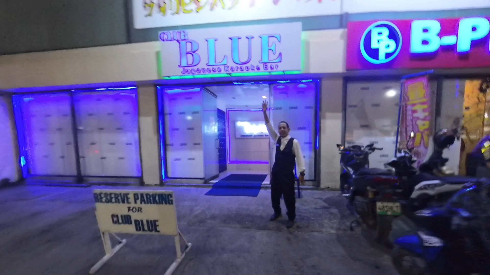
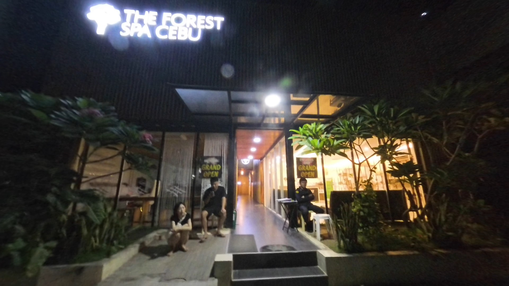
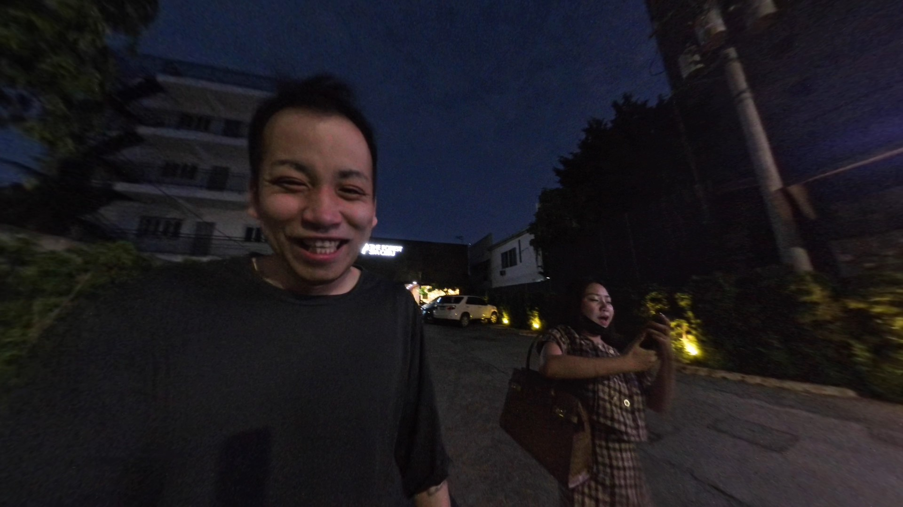

こんにちは！今回はセブ島旅行での夜遊び体験を赤裸々にお届けします。お酒と美女、そして思わぬハプニングまで...シヌログ祭り期間中の特別な夜をレポートします！
今回のセブ島旅行は、ナイトライフを楽しむことが主な目的でした。実は過去にも何度か訪れたことがあるんですが、シヌログ祭りの期間中ということもあって、街全体がお祭りムードで盛り上がっていました。過去に何度も行ったことがあるクラブ「Blue」での出来事を中心にお届けします。
「Blue」での再会と複雑な心境

「Blue」に到着しました。ここのRicaという女性は以前から指名していた子で、実は彼女から「寝坊した」というLINEメッセージをもらっていました。その際に同伴の誘いもあったのですが、「クラブでのペナルティを避けるためかな？」と邪推してしまい断ってしまいました。そのため少し気まずい雰囲気も...
でも結局Blueで彼女と会えて、「久しぶり〜！」と再会を喜び合いました。「Pit Señor!」（シヌログ祭りの挨拶）と言いながら盛り上がりました。テキーラも一緒に飲んで、かなり酔っ払ってしまいました。
「Pit Señor! Pit Señor! シヌログ、シヌログ！明日シヌログだよね？！」
ただ、心の中では「彼女は本当に僕に興味があるのかな？それともただの養分（お金を落とす客）として見てるだけ？」という疑問もありました。でも彼女の明るい笑顔と高いエネルギーは本物で、一緒にいて楽しかったのも事実です。
【正直な感想】 「彼女は僕に興味があるのかな？でも結局楽しかったからいいか！男は自分の立場をわきまえないとね（笑）」
Blueでの支払いはかなり高額で、4,800ペソ（約12,000円）もかかりました。初日だけで10,000ペソ以上使ってしまい、「3日間で10,000ペソぐらいにしようと思ってたのに...」と少し反省。でも、楽しかったからまあいいか！という気持ちでした。
シヌログ祭り期間中の大混雑！移動手段の苦労
セブ島を訪れた時期がシヌログ祭りの期間と重なったので、街は観光客で大混雑！Ricaから「シヌログは危険だよ」と言われたものの、彼女自身は「そんなに危険じゃないよ」と笑っていました。でも確かに人が多いので貴重品には注意が必要です。
実際に大変だったのは交通手段です。タクシーもGrabも全然捕まらない状況で、移動がとても大変でした。シヌログ祭り期間中は本当に来ない方がいいかもしれません...特に移動面で苦労します。
夜中の誘い！？「Forest Spa」でのマッサージ体験

もう寝るつもりだった夜中の3時半頃、突然Ricaから「マッサージを受けたい」というLINEが！正直疲れていたけど「自分もマッサージ受けたいな」と思って行くことにしました。
「本当は寝るつもりだったのに...でもLINEメッセージが来たからな。彼女が僕を利用するなら、僕も彼女を利用させてもらおう（笑）」
「Forest Spa」というところに行ったんですが、セブでは比較的高級なスパで1人1,000ペソ（約2,500円）。日本に比べれば安いけど、セブの物価としては高めです。以前にも行ったことがあるので、普通のマッサージ（健全な方）だとわかっていました。
マッサージは90分間のコースで、足を洗ってもらうサービスもあります。これがとても気持ちよかった！日本では足を洗ってくれないけど、タイやフィリピンではやってくれるんですよね。
【マッサージ後の珍場面】 「マッサージなのに、どうして○○が立つの？」「マッサージだと血行が良くなるからだよ！」という会話も...（笑）
マッサージ後は朝の6時になっていて、Ricaの交通手段が見つからない状況に。僕はもともと歩いて帰るつもりでしたが、Ricaはなかなか移動手段が見つからず大変そうでした。「シヌログ祭りの第3週目はフィナーレだから特に混むよ」と言われた通りの状況でした。
27時間起きっぱなし！疲れ切った僕の教訓

実は日本時間の朝3時から起きていたので、このマッサージを終えた時点で約27時間起きっぱなしという状態に...。「ホテルに帰ったら無料の朝食を食べて、そのままぐっすり寝よう」というのが唯一の目標になっていました。
正直、初日だけであんなにお金を使うつもりはなかったんです。3日間で1万ペソぐらいの予定が、1日目だけで超えてしまいました。でも「楽しかったからいいか」と思えるのも、旅行ならではですよね。
この経験から学んだことは：
- JTVでの飲み物は日本よりはだいぶ安い！ でも飲みすぎには注意が必要
- シヌログ祭り期間中は移動手段の確保が難しい 徒歩圏内での行動がベスト
- 貴重品管理には特に注意 人混みの多い祭り期間中はスリのリスクも
- 深夜のメッセージには要注意（笑） 計画外の誘いで睡眠不足に
でも、こんなハプニングも含めて旅の思い出になるんですよね。Blueでお酒を飲みながら「Pit Señor! Sinulog!」と叫んだり、深夜にマッサージに行ったり...普段の日本では絶対にしない体験ができました。
とにかく長い1日でした。ホテルに戻って無料の朝食を食べ、ぐっすり眠りました。めちゃくちゃ楽しかったけど、疲れもピークでした！